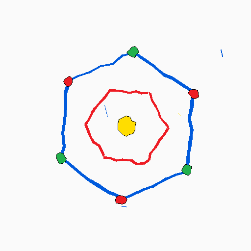
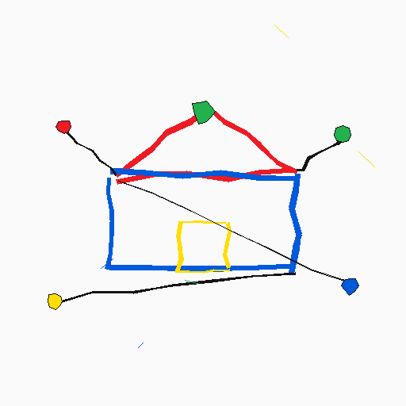

About

안녕하세요, GuinEeeeeeeeeeeeeeeeeeeeeeeerm입니다.
생각난 것들을 쓰고, 만들고, 부숩니다.
guinjaaaaaaaaaaaaaaaaaaaaakeop

github.com/guinjaaaaaaaaaaaaaaaaaaaaakeop
마음에 드는 하네스가 없어서 개발, 기획, 디자인 작업에 쓰기 위한 하네스를 직접 만들고 있습니다.
- 프로젝트마다 사용할 스킬과 플러그인을 통제하고(훈수),
- 처음 프로젝트를 접하는 사람과 에이전트도 기획과 구현의 정합성을 보장하면서 협업할 수 있도록 의미 모델을 관리하고(망상),
- 작업을 진행하는 방식을 정하고 실행하고 회고하고 기록하는(총대, 하청, 뒷북),
위와 같은 개념을 담은 프로토타입을 구현 중입니다.